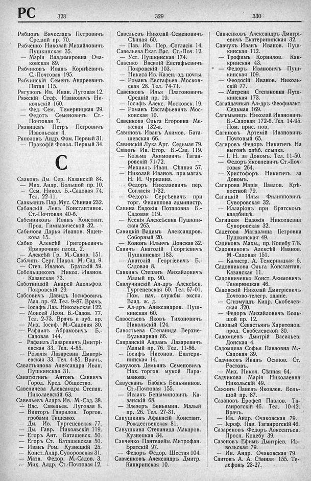

Лист источника 460
Скан

Распознанный текст
РС 328 329 330
Рябцовъ Вячеславъ Петровичъ
Средній пр. 70.
Рябченко Николай Михайловичъ
Пушкинская 35.
— Марія Владиміровна Оча-
ковская 89.
Рябчиковъ Иванъ Корнѣевичъ
С.-Почтовая 195.
Рябчинскій Семенъ Андреевичъ
Пятая 115.
Рягузовъ Ив. Иван. Луговая 12.
Ряжскій Стеф. Ивановичъ Ни-
кольскій 160.
— Фед. Сем. Темерницкая 29.
— Федотъ Семеновичъ Ст.-
Почтовая 7.
Рязанцевъ Петръ Петровичъ
Извольская 4.
Ряполовъ Андр. Фом. Первый 31.
— Прокофій Фолол. Первый 34.
С
Сааковъ Дм. Сер. Казанскій 84.
— Мих. Андр. Большой пр. 10.
— Сем. Никол. Б.-Садовая 74.
Тел. 22-11.
Саакьянцъ Пар. Мус. Сѣнная 232.
Сабанскій Левъ Константинов.
Ст.-Почтовая 40-б.
Сабенниковъ Иванъ Констант.
Прод. Гимназической 32.
Сабинова Дарья Иванов. Ящен-
кова 15.
Сабко Алексѣй Григорьевичъ
Ярмарочная площ. 2.
— Алексѣй Гр. М.-Садов. 151.
Саблинъ Серг. Никол. М.-Сад. 9.
— Степ. Иванов. Братскій 59.
Собольщиковъ Никол. Иванов.
Казанская 73.
Саботницкій Андрей Адольфов.
Покровскій 29.
Сабсовичъ Давидъ Іосифовичъ
Мал. пр. 42. Тел. 9-87. Врачъ.
— Іосифъ Лаз. Никольская 122.
— Моисей Леон. Б.-Садов. 77.
Тел. 2-73. Врачъ и зуб. вр.
— Мих. Іосиф. М.-Садовая 30.
— Рафаилъ Абрамовичъ Б.-
Садовая 144.
— Рафаилъ Лазаревичъ Дмитрі-
евская 33. Тел. 4-85.
— Розалія Лазаревна Дмитрі-
евская 33. Тел. 4-85. Врачъ.
Савастьянова Александра Иван.
Пушкинская 31.
Саватюгинъ Антонъ Саввичъ
Город. Кред. Общество.
Савеличева Александра Степан.
Николаевскій 63.
Савельевъ Алдръ Ив. М.-Сад. 38.
— Вас. Савельев. Луговая 8.
— Викторъ Гаврилов. Торгов.
гробами Тищенко.
— Дм. Ив. Тургеневская 77.
— Дм. Гавр. Никольскій 119.
— Егоръ Ант. Баташевск. 50.
— Егоръ Ст. Баташевская 50.
— Иванъ Ром. Кузнецкій 25.
— Конст. Алдр. Суворовская 31.
— Матв. Федор. М.-Садов. 3.
— Мих. Алдр. Ст.-Почтовая 12.
Савельевъ Николай Семеновичъ
Сѣнная 60.
— Пав. Ив. Пер. Согласія 14.
Савельева Екат. Вас. Ст.-Поч. 12.
— Уст. Пушкинская 174.
Савенко Василій Евстафьевичъ
Покровскій 103.
— Никита Ив. Казен. зд. почты.
— Романъ Евстафьев. Москов-
ская 28. Тел. 74-71.
Савенковъ Илья Платоновичъ
Средній пр. 19.
— Іосифъ Алекс. Московск. 19.
— Романъ Евстафьевичъ Мос-
ковская 10.
Савенкова Ольга Егоровна Ме-
жевая 132-а.
Савиновъ Иванъ Акимов. Бата-
шевская 66.
Савинскій Лука Арт. Седьмая 79.
Савинъ Ив. Егор. Б.-Сад. 119.
— Козьма Акимовичъ Таган-
ровскій 71/72.
— Михаилъ Иван. Сѣнная 57.
— Николай Иванов. при магаз.
Н. И. Чурилина.
— Федоръ Николаевичъ пер.
Согласія 1/32.
— Федоръ Сергѣевичъ при
торг. Филиппова администр.
Савина Евдокія Потаповна Б.-
Садовая 119.
— Ксенія Алексѣевна Пушкин-
ская 265.
Савицкій Вадимъ Александров.
Соборный 20.
— Кононъ Ильичъ Донская 32.
Савичъ Анатолій Георгіевичъ
Пушкинская 183.
— Анатолій Георгіевичъ Б.-
Садовая 8.
Савкинъ Степанъ Михайловичъ
Малый пр. 90.
Савлучинскій Ал-дръ Алексѣев.
Тургеневская 60. Тел. 67-01.
Пом. нач. службы экспл.
Влад. ж. д.
— Ал-дръ Александров. Пуш-
кинская 60.
Савостьевъ Яковъ Тихоновичъ
Никольскій 124.
Савостьева Степанида Верхне-
Бульварная 86.
Савранскій Аврамъ Лазаревичъ
Малый пр. 76. Тел. 11-86.
— Іосифъ Нисонов. Екатери-
нинская 14.
Савуловъ Демьянъ Семеновичъ
Нах. торгов. мукой Пара-
манова.
Савусканъ Бабакъ Беньяминов.
Ст.-Почтовая 155.
— Исаакъ Беніаминовичъ Ка-
занскій 68.
— Элезеръ Беньямин. Малый
пр. 26. Тел. 27-31.
Савушкинъ Афанасій Констант.
Рождественская 81.
Савушкина Степанида Макаров.
Кузнецкая 34.
Савченко Пантелейм. Митрофан.
Братскій 97.
— Федоръ Федор. Шестая 104.
Савченковъ Александръ Дмитр.
Канкринская 10.
Савченковъ Александръ Дмитрі-
евичъ Екатерининская 32.
Савчукъ Иванъ Иванов. Пуш-
кинская 112.
— Трофимъ Корнилов. Кан-
кринская 43.
— Федоръ Ивановичъ Пуш-
кинская 109.
— Феодосій Иванов. Николь-
скій 77.
— Матрена Степановна Пуш-
кинская 173.
Сагайдачный Ал-дръ Феофилакт.
Седьмая 169.
Сагимьянцъ Николай Ивановичъ
Б.-Садовая 172-б. Тел. 14-95.
Пом. прис. пов.
Сагиновъ Артемій Ивановичъ
Почтовый 65.
Сагировъ Федоръ Никитичъ На
выгонѣ хлѣб. ссылка.
— І. Н. за Дономъ. Тел. 11-50.
— Федоръ Яковлевичъ Ст.-Поч-
товая 264.
— Христофоръ Никитичъ за
Дономъ.
Сагирова Марія Павлов. Крѣ-
постной 79.
Сагицкій Илья Филипповичъ
Суворовская 32.
— Илларіонъ при Братскомъ
кладбищѣ.
Сагицкая Евдокія Николаевна
Суворовская 32.
Садетова Магдалина Петровна
Пушкинская 49.
Садиковъ Махм., пр. Коцебу 7/8.
Садовниковъ Алексѣй Иванов.
М -Садовая 151.
— Калистр. А. Темерницкая 6.
Садовникова Ольга Константин.
Казанская 11.
Садовниченко Конст. Акимовичъ
Темерницкая 46.
Садовскій Николай Дмитріевичъ
Почтово-телегр. зданіе.
— Сгизмундъ Кипр. Скобелев-
ская 320.
— Федоръ Михайловичъ Боль-
шой пр. 12.
Садовый Севастьянъ Харитонов.
прод. Скобелевской 30.
Садомцевъ Дмитрій Васильев.
Донская 4.
Садомцева Софья Павловна М.-
Садовая 39.
Садчиковъ Иванъ Осипов. Ст.
Ростовъ.
— Мих. Никол. Сѣнная 64.
Садчикова Марія Николаевна
Никольскій 49.
Сажинъ Павелъ Яковлев. Боль-
шой пр. 87.
Сазановъ Ерофей Павлов. Та-
ганрогскій 46. Тел. 10-42.
Врачъ.
— Ив. Андр. Очаковская 79.
— Іероф. Пав. Таганрогскій 46.
Сазареновъ Федоръ Авксентьев.
Просп. Коцебу 39.
Сазоновъ Ефимъ Дмитріев. Из-
вольская 79.
— Ив. Андр. Очаковская 79.
Саитовъ А. А. Сѣнная 155. Те-
лефонъ 23-27.